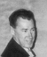

“Bart”
Bartlett

Dear George,
I’ve been trying to place you — looking back to those days when Buck (W6VPC) was so much a part of the bay area RTTY scene. I was an early member of the NCARTS and attended many of their meetings. From your E-mail, it is quite apparent you knew Buck very well. Did we meet during that 1950s period?
I lived on the other side of the bay, several QTHs in Redwood City, San Carlos, and Belmont. Despite a number of moves, I was very active in ham radio. Now, in retirement, I wonder how I managed a full-time job, a small manufacturing business, DXing, building gear and on the air with RTTY!
There were changes in the 1960s which took me away from this flurry of activity although I never gave up RTTY. I was employed by Press Wireless at their high-power transmitting station on the tide flats east of Belmont. But business was falling off due to the rapid changes in the long distance communications field: improved cable facilities and the up-and-coming satellite development. Press Wireless merged with ITT in what we employees saw as basically a real estate deal whereby ITT became the owner of some prime bay area real estate which had been the Press Wireless “antenna farm.” I went back to school with the thought that I might be able to move from the point-to-point field into satellite communications. This didn’t work out as satellite employees were being drawn from the radar-trained people leaving the military. But the schooling paid off and I left ITT and went to work for Aeronautical Radio. I continued at ARINC until I retired in 1974.
That’s a bit of background. George.
About RTTY: My first experience with Teletype might have “turned me off” of any further interest. I was working for KNX, Hollywood, in their news department. My job was intercept operator, copying shortwave dispatches provided by Transradio Press Service. One day in the fall of 1936, something new appeared in the newsroom: a Model 15 RO (Receive Only) Teletype tied to the news wire of one of the major press services. I could see myself being replaced by this mechanical contraption… and this is just what did happen about Thanksgiving of that year.
Coincidentally, Transradio Press was opening a bureau in Los Angeles, so I wasn’t out of work very long, and strangely enough, a Model 15 (later a 19) replaced the typewriter on which the short wave transmissions were copied. Transradio sent me to a class operated by the Telephone Company where I received instruction. During the next few years I became very adept at the use of Model 15 and Model 19 Teletypes as well as the Model 14 machines on a Postal Telegraph circuit that came into the office.
I’ve often thought of the thousands of words of news leading up to WW2 for which I was the “interface,” copying CW at 39 words per minute directly to the Teletype circuit which distributed the news to clients around southern California. When the shortwave circuit was idle, I was busy with technical problems involving a remote receiving site and designing a siphon tape recording system — the latter to ease the developing difficulty of finding high speed CW personnel; a non-radio person could be trained in a much shorter time to read the inked tape.
The United States entry into WW2 is another chapter. I had been turned down by the Navy. I went to work for Press Wireless and this is a good place to mention that they were pioneers in the HF development of FSK. Initially, it was used on CW point-to-point circuits with a significant improvement in thru-put. A notable achievement attributed to the use of FSK involved two Press Wireless units that accompanied advancing allied forces in Europe and the Philippines during WW2. The transmitters operated at only 400 watts but using FSK they were able to maintain high speed circuits bringing reports from war correspondents to agency and newspaper editors in the U.S. only minutes after dispatches had been released by censors. I was with the Philippines unit.
By the end of WW2, FSK had made Radioteletype a practical reality in the military and commercial fields. It was an emission, however, not available to hams operating HF until February, 1953.
In the late 1940s I had an opportunity to make a trade for a Model 15 Teletype a school had received in a shipment of war surplus items. They had no use for the Teletype but were happy to trade it for a Hammarlund 120 I had. This involved a trip on my days off to Santa Monica from San Carlos. But at a time when the Model 12 machine usually was all that was available, one didn’t turn down an opportunity to pick up the later Model 15.
This was a complete set, including the table and DC power supply. I set it up in my garage and found it in perfect working order. But how to use it on the air? At that time I was strictly HF. A check of the “Rules and Regs” showed the baudot alphabet was listed for A-1 (CW) so using CW mode and keying from the Teletype would be legal. I immediately set to work designing a terminal unit for make and break Teletype keying (MAB). In tuning commercial HF frequencies I located several circuits not yet running FSK and using the MAB mode. This provided a ready-made source of test signals for working the bugs out of a home-brew terminal.
It was May 1952 before I was ready to start on-the-air testing. The first test was with W6YEB with whom I had long maintained a CW schedule. He was a retired communications technician and his report of low distortion was encouraging. Later that same month I was able to set up two-way tests with W6RWL who had worked out a circuit for keying his transmitter from a Model 12 Teletype. The tests were successful but we were only a few miles apart. How would it work on a longer path?
During following weeks I would occasionally key one of my transmitters from the Teletype, calling CQ. This is probably how contact was made with Wallace Ludgate, W7LU, in Portland, OR. He was enthusiastic about giving MAB keying a try. He had a Teletype and had built an FSK terminal unit. We discussed ways it might be modified for make-and-break keying. A schedule was made for July 5th, 1952. Copy was only fair. My log doesn’t indicate what the difficulty was but another schedule a week later resulted in a solid 30-minute RTTY QSO. From then until FSK was authorized, W7LU and I enjoyed many RTTY contacts using the MAB mode.
It was February 20, 1953, that FSK became legal on the HF bands. At 12:35 AM I contacted W6RZL for my first FSK QSO. We concluded the contact at 1:10 AM. No other RTTY was heard and there was no answer to a RTTY CQ so I closed down for the rest of the night. W0UUL was the only other contact that first day of FSK operation. The next day, Bill Snyder, W0LHS, was worked. Bill, in more recent years, wrote “The Digital Bus” column in World Radio.
Glancing at the pages in old log books, the number of RTTY QSOs clearly shows the growing interest in this new mode. Merrill Swan, W6AEE, began publishing his RTTY bulletin which carried numerous articles on terminal units, modifying VFOs for FSK, and innovative ideas for adapting an increasing number of surplus Teletype items to ham station use. In August, 1955, CQ magazine began an RTTY column under the able stewardship of Byron Kretzman, W2JTP. A few years later, Wayne Green, W2NSD, who had always been an advocate of RTTY, began publishing 73 magazine and frequent articles on RTTY appeared on its pages.
About Reg Tibbetts. I found a note in my log where I had called an RTTY CQ on 40 meters and received a phone call from Reg. The log, however, gives no information on our conversation and, frankly, I have no recollection of that “QSO.” I don’t find any record in my logs of having worked W6ITH nor do I recall him attending any meetings of the Northern California RTTY Society. Still, his call was well known and you are correct about the communications work he did during the bridge construction. I knew of him also from my work at Press Wireless. He did shortwave intercept work for the United Press at his QTH in Moraga. And it was my understanding that after I left Manila in late 1946, my replacement had business dealings with Reg involving war surplus equipment.
I remember a story that made the rounds of the RTTYers in those early years. During the non-FSK days, the story goes that Reg set up two transmitters, one on the mark frequency, the other on the space frequency and keyed each from the appropriate RTTY mark or space pulses. This produced what on the air appeared as an RTTY FSK signal. I never heard the FCC view on this. (Ed. Note: This did bother the FCC immensely. More on this in a future cameo of W6ITH.)
You asked about other RTTY pioneers of those early days. There were many who contributed their ideas. Anyone who worked RTTY knew of Boyd Phelps, W0BP, who was killed in an automobile accident in Mexico. Bob Weitbrecht, W9TCJ (later W6NRM), was very active both on the air and in the design of equipment. Bob also met a tragic end, a pedestrian in an automobile/pedestrian accident. Bob was a good friend of ours and had visited our home in Paradise a number of times. Byron Kretzman, W2JTP, is remembered for the years of RTTY columns he wrote for CQ magazine. And who can forget Wayne Green?
George: this is admittedly rather lengthy. My wife and I may be on the road in our RV this summer and rather than take a chance on finding time to write, I put all the foregoing into this one letter. I hope there is some of it you can make use of and I want to wish you good luck with the Website. I don’t have Internet access at the present time — I’ve got to learn the E-mail route first!
A postscript to all this might be mention of a long-standing schedule I’ve had with Marvin Collins, W6OQI. Our first contact was in 1955. We’ve kept in touch, much of the time with weekly RTTY schedules, since that time! (Ed. Note: They can be found at 3602.5 KHz several nights each week, early evening.)
Bart